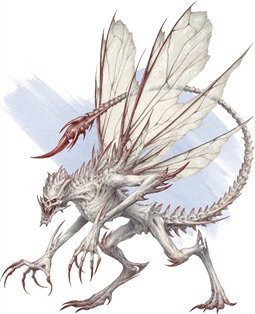

Bone Devil
Driven by hate, lust, and envy, bone devils act as the cruel taskmasters of the Nine Hells. They set weaker devils to work, taking special delight in seeing fiends that defy them demoted. At the same time, they long for promotion and are bitterly envious of their superiors, attempting to curry favor though it irks them to do so.
A bone devil appears as a humanoid husk, with dried skin stretched tight across its skeletal frame. It bears a fearsome skull-like head and the tail of a scorpion, and a foul odor of decay hangs in the air around it. Though they are devastating in combat with their claws, bone devils also wield hooked polearms made of bone, which they use to subdue enemies before striking with their venomous tails.